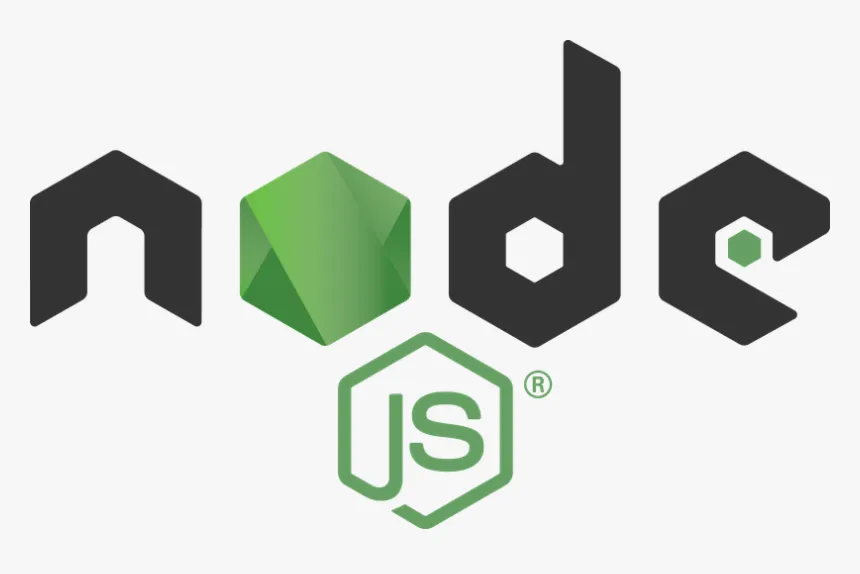

Hi, My name is Priyanshu raj
and I am Passionate
Work experience
HTML Developer
HTML, or HyperText Markup Language, is the standard markup language for describing the structure of documents displayed on the web. It consists of a series of elements and attributes used to mark up all the components of a document to structure it in a meaningful way.
CSS Developer
CSS (Cascading Style Sheets) is a style sheet language used to specify the presentation and styling of a document written in a markup language such as HTML or XML, including XML dialects such as SVG, MathML or XHTML. It is a cornerstone technology of the World Wide Web, alongside HTML and JavaScript.
Javascript Developer
JavaScript was initially created to “make web pages alive”.
The programs in this language are called scripts. They can be written right in a web page’s HTML and run automatically as the page loads.
Scripts are provided and executed as plain text. They don’t need special preparation or compilation to run.
In this aspect, JavaScript is very different from another language called Java.
mongoDB Developer
MongoDB is a document-oriented NoSQL database used for high volume data storage. Instead of using tables and rows as in the traditional relational databases, MongoDB makes use of collections and documents. Documents consist of key-value pairs which are the basic unit of data in MongoDB. Collections contain sets of documents and function which is the equivalent of relational database tables.

Nodejs Developer
Node.js is an open-source, cross-platform JavaScript runtime environment and library for running web applications outside the client's browser. Ryan Dahl developed it in 2009, and its latest iteration, version 15.14, was released in April 2021. Developers use Node.js to create server-side web applications, and it is perfect for data-intensive applications since it uses an asynchronous, event-driven model.